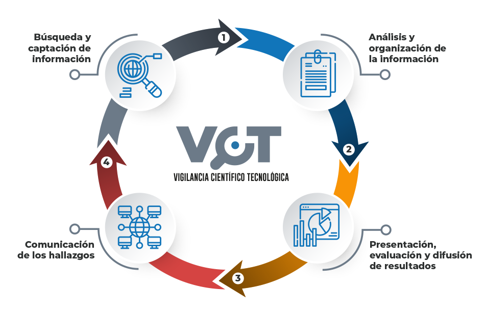

Desde el Observatorio Nacional de Ciencia, Tecnología e Innovación (ONCTI) se concibe el uso y disponibilidad de la información científico-técnica como un elemento orientador para la formulación de una política pública de ciencia y tecnología que responda a la satisfacción de las necesidades y el bienestar social de la población. De esta manera, la vigilancia tecnológica (VT) se plantea como proceso metódico de generación de información estratégica, oportuna y pertinente al servicio del Estado.
El proceso de VT, generalmente asociado al concepto de Inteligencia competitiva ha sido una práctica empresarial que, desde un enfoque corporativo dirige sus esfuerzos a conseguir información sobre los avances tecnológicos en una etapa temprana, con el fin de incorporar tecnologías eficientes que puedan constituirse en ventajas competitivas para la empresa. En ese sentido, la gestión de la información tecnológica novedosa se convierte en una herramienta más para la agresividad competitiva del sistema del capital.
No obstante su origen y desarrollo empresarial, la VT puede ser de gran utilidad para la planificación del sector público, al permitir ubicar los parámetros y avances de determinados temas tecnológicos cuyo “estado del arte” es necesario monitorear para guiar políticas de innovación tendientes a su incorporación en los procesos productivos de las empresas del Estado así como estimular su adopción por parte de los privados en función de generar mayores niveles de autonomía respecto a los centros hegemónicos de producción de tecnologías.
Generar información estratégica para la formulación de políticas públicas en materia de CTI y alertar sobre toda la infromación de carácter cinetífico o técnico susceptible de constituirse en oportunidades o amenzas para el desarrollo integral del país.
El ONCTI, haciendo uso de las tecnologías de información y herramientas colaborativas fundamentadas en la minería y el anális de datos, se propone llevar a cabo el proceso de VT en 4 fases.
El alcance de la VT se establecerá de acuerdo con los factores críticos que apunten a la atención de las áreas prioritarias para el país. En una fase inicial ONCTI. Orientará el proceso VT haciendo énfasis en los sectores definidos por el Consejo Presidencial de Ciencia y Tecnología.